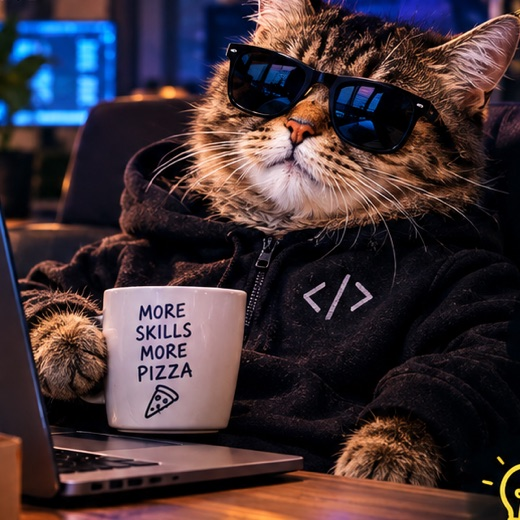
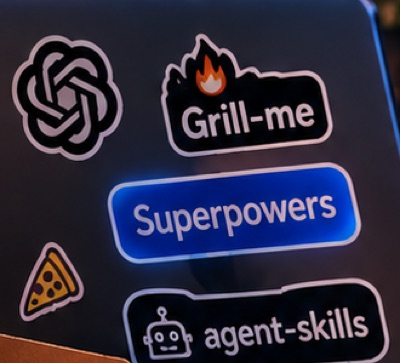

Skille dla agentów AI:
który zestaw wybrać?
Trzy najpopularniejsze kolekcje skilli do Claude Code. Najpierw krótko i na żywo, potem zadanie domowe do samodzielnego przeklikania.
← → / spacja · O = spis slajdów · dane z GitHuba: 26.10.2026

Czym jest skill?
Folder z plikiem SKILL.md
Instrukcje w Markdownie, które agent ładuje dopiero wtedy, gdy są potrzebne. Na start w kontekście jest tylko nazwa i opis z frontmattera.
---
name: grill-me
description: A relentless interview to
sharpen a plan or design.
---
# treść: proces, kroki, reguły…Dwa sposoby wywołania
- Przez użytkownika: wpisujesz
/nazwa(np./grill-me) - Przez model: agent sam sięga po skill, gdy opis pasuje do zadania (np. TDD przy implementacji)
Plugin = paczka skilli
Wszystkie trzy kolekcje to pluginy Claude Code: skille, komendy, czasem hooki i subagenci. Instalujesz przez /plugin.
Trzy zestawy na rzut oka
🔥 mattpocock/skills
„Skills for Real Engineers”
Lekki, komponowalny zestaw narzędzi. Najmocniejszy w doprecyzowaniu wymagań, zanim powstanie kod.
⚡ obra/superpowers
„Skills framework & methodology”
Kompletna metodyka: brainstorm → plan → subagenci → review. Skille odpalają się same i są obowiązkowe.
🤖 addyosmani/agent-skills
„Production-grade engineering skills”
Cały cykl życia oprogramowania (Define → Ship) z bramkami jakości, personami recenzentów i checklistami.
/\_/\ ( o.o ) > ^ <
Gwiazdek prawie po równo u dwóch pierwszych. Różnica jest w filozofii, więc o niej teraz.
Grill-me: najpierw zrozumienie, potem kod
Problem nr 1: rozjazd oczekiwań
Najczęstsza porażka to misalignment: myślisz, że agent wie, czego chcesz, a potem widzisz, co zbudował. Lekarstwo to sesja grillowania, w której agent zadaje ci szczegółowe pytania.
Małe, komponowalne, twoje
Pocock świadomie odcina się od frameworków typu GSD, BMAD czy Spec-Kit, które „przejmują proces” i odbierają kontrolę. Jego skille są małe, łatwe do przerobienia i działają z każdym modelem.
Pozostałe filary repo: wspólny język (glosariusz domeny), pętle feedbacku (TDD, typy, przeglądarka) i dbałość o architekturę (deep modules wg Ousterhouta).
Jak działa grillowanie
- Agent buduje drzewo decyzji: każda decyzja rozgałęzia się na kolejne.
- Pyta w rundach. W rundzie są tylko pytania, na które da się już odpowiedzieć (tzw. frontier).
- Przy każdym pytaniu podaje swoją rekomendację, więc „tak” oznacza akceptację.
- Fakty sprawdza sam (kod, pliki, narzędzia, przez subagenta). Decyzje należą do ciebie.
- Koniec, gdy drzewo jest wyczerpane i nic nie zostało przyjęte po cichu.
Cookie HTTP-only, JWT w localStorage czy sesja po stronie serwera?
Superpowers: metodyka, nie zestaw porad
Superpowers to kompletna metodyka wytwarzania oprogramowania dla agenta. Skille aktywują się automatycznie, a agent przed każdym zadaniem sprawdza, który ma zastosowanie. To obowiązkowe workflow, nie sugestie.
🧪 Test-Driven Development
Testy zawsze najpierw. Kod napisany przed testem jest usuwany.
🧭 Systematycznie zamiast na czuja
Proces zamiast zgadywania, również przy debugowaniu (4 fazy szukania przyczyny).
✂️ Redukcja złożoności
Prostota jako główny cel: YAGNI i DRY.
🔍 Dowody, nie deklaracje
Weryfikacja przed ogłoszeniem sukcesu (verification-before-completion).
Workflow, który uruchamia się sam
Efekt: agent potrafi pracować autonomicznie nawet kilka godzin bez zbaczania z planu.
agent-skills: dyscyplina seniora w każdej fazie
Agenci domyślnie pomijają spec, testy i security review. agent-skills koduje workflow, bramki jakości i dobre praktyki seniorów, żeby agent stosował je konsekwentnie.
📋 Proces, nie proza
Każdy skill ma kroki, punkty kontrolne i warunki wyjścia. To workflow do wykonania, a nie dokumentacja do przeczytania.
🛡️ Anti-rationalization
Tabela typowych wymówek agenta („dodam testy później”) z gotowymi kontrargumentami plus lista „Red Flags”.
✅ Weryfikacja obowiązkowa
Każdy skill kończy się wymaganiem dowodów: testy, output builda, dane z runtime. „Wygląda dobrze” nie wystarcza.
🏛️ Kultura inżynierska Google
Hyrum's Law, Beyoncé Rule, piramida testów, Chesterton's Fence, trunk-based development, Shift Left.
Komendy mapują cykl życia oprogramowania
Dodatkowe komendy
/constraints: próg jakości ustalony raz/code-simplify: czytelność ponad spryt/webperf: najpierw pomiar
Tryb /build auto
Zatwierdzasz plan raz, a agent implementuje wszystkie zadania, każde przez TDD i osobny commit. Zatrzymuje się przy błędach.
Auto-aktywacja
Projektujesz API, to włącza się api-and-interface-design. Budujesz UI, to frontend-ui-engineering.
Który wybrać?
🔥 Grill-me, gdy…
- agent ciągle „zgaduje” wymagania
- chcesz kontrolować każdy krok
- robisz szybkie, codzienne zmiany
- budujesz słownik domeny (GLOSSARY.md, ADR)
⚡ Superpowers, gdy…
- masz duże, niejasne zadanie i chcesz je oddać agentowi
- akceptujesz sztywny proces (TDD zawsze)
- chcesz długiej, autonomicznej pracy z review
🤖 agent-skills, gdy…
- prowadzisz feature od specu do produkcji
- liczy się security, wydajność, observability
- chcesz wspólnego standardu dla zespołu
Szybkie scenariusze
- „Mam mglisty pomysł”: /grill-me (albo
interview-mez agent-skills) - „Refactor podsystemu na noc, review rano”: Superpowers
- „Nowy endpoint z auth, testami i security review”: agent-skills,
/spec…/ship
Pytania?
To była część na żywo. Reszta jest dla ciebie: instalacja krok po kroku, filmy, pełne porównanie i misja na 18–19.11.
// link do tego decku zostaje, przeklikaj go po spotkaniu
DOMOWE
Od tego miejsca deck jest do przeklikania we własnym tempie. Każdy zestaw ma tu trzy slajdy: instalacja, co jest w środku i filmy. Na końcu pełne porównanie i misja.

Grill-me: instalacja i pierwsze użycie
1. Plugin w Claude Code (sam się aktualizuje)
claude plugin install mattpocock-skills@claude-plugins-official
…albo edytowalne pliki w projekcie
npx skills@latest add mattpocock/skills
Wybierz jedną z tych dwóch metod. Obie naraz dadzą każdy skill podwójnie.
2. Raz na repo: konfiguracja
/setup-matt-pocock-skills
Pyta o issue tracker (GitHub, GitLab, pliki lokalne), etykiety do triage i miejsce na dokumenty.
3. Użycie
/grill-me Chcę dodać eksport raportów do CSV
Grill-me to wejście do większego zestawu
Repo mattpocock/skills ma 27 skilli. Typowy łańcuch wygląda tak:
Wywoływane przez ciebie (orkiestracja)
/grill-me/grill-with-docs/to-spec/to-tickets/implement/implement-spec/triage/wayfinder/improve-codebase-architecture/handoff/retro/ask-matt/wait-whatWywoływane przez model (dyscyplina)
grillingtdddiagnosing-bugscode-reviewdomain-modelingcodebase-designprototyperesearchprNie wiesz, od czego zacząć? /ask-matt podpowie, który skill pasuje do sytuacji.
Filmy: zobacz to w akcji
- AUTORmattpocock/skills: A complete AI Coding workflow, end-to-end Matt Pocock · 17 min · 728 tys. · 07.2026 Oficjalny tutorial: instalacja, setup, grill-with-docs, spec, tickety, implementacja z code review.
- WYWIADAI Skills with Matt Pocock The Pragmatic Engineer · 97 min · 242 tys. · 09.2026 Skąd popularność grill-me i dlaczego fundamenty inżynierii liczą się bardziej niż kiedykolwiek.
- I've Tried NEW /grill-me v1.2 by Matt Pocock AI Coding Daily · 12 min · 18 tys. · 08.2026 Krótki, praktyczny test grillowania na prawdziwym zadaniu.
Superpowers: instalacja i pierwsze użycie
Oficjalny marketplace Anthropic
/plugin install superpowers@claude-plugins-official
…albo marketplace autora
/plugin marketplace add obra/superpowers-marketplace /plugin install superpowers@superpowers-marketplace
Użycie: nic specjalnego
Po prostu opisz, co chcesz zbudować. Test instalacji z README:
Let's make a react todo list
Działająca instalacja sama uruchomi brainstorming, zanim powstanie jakikolwiek kod.
SUPERPOWERS_DISABLE_TELEMETRY=1. Respektowane jest też DISABLE_TELEMETRY z Claude Code.Co jest w środku
Testy i debugowanie
test-driven-developmentsystematic-debuggingverification-before-completiondiagnosing-superpowersWspółpraca i proces
brainstormingwriting-plansexecuting-planssubagent-driven-developmentdispatching-parallel-agentsrequesting-code-reviewreceiving-code-reviewusing-git-worktreesfinishing-a-development-branchMeta
using-superpowerswriting-skillsPisanie własnych skilli razem z metodyką ich testowania („pressure testing”).
Gdy coś pójdzie nie tak
Napisz: „figure out what went wrong with superpowers in this session”. Skill diagnosing-superpowers przeanalizuje transkrypt sesji i pokaże dowody.
Tańszy wariant kroku z subagentami: wszystkie zadania inline w jednej sesji.
Filmy: zobacz to w akcji
- TUTORIALClaude Code + SUPERPOWERS = The End of Vibe Coding? Eric Tech · 15 min · 127 tys. · 03.2026 Pełny tutorial: instalacja i przejście przez cały workflow na przykładzie.
- AUTORGive Your Agents Superpowers: Jesse Vincent Live with Tim O'Reilly O'Reilly · 62 min · 09.2026 Twórca o filozofii: agentami, tak jak ludźmi, kieruje się kontekstem, jasnymi celami i feedbackiem.
- Claude Code Gets Superpowers! Java Brains · 19 min · 38 tys. · 12.2025 Spokojne, dokładne omówienie od znanego kanału edukacyjnego.
- PLSuperpowers dla Claude Code: Skills, które zmieniają sposób kodowania z AI Claude Code Lab · 5 min · 03.2026 Krótki przegląd po polsku.
agent-skills: instalacja i pierwsze użycie
Plugin w Claude Code (zalecane)
/plugin marketplace add addyosmani/agent-skills /plugin install agent-skills@addy-agent-skills
Błąd SSH (Permission denied (publickey))? Podaj pełny URL HTTPS:
/plugin marketplace add https://github.com/addyosmani/agent-skills.git
…albo wybrane skille przez CLI
npx skills add addyosmani/agent-skills --list npx skills add addyosmani/agent-skills --skill interview-me
Użycie
/spec Endpoint do eksportu raportów /plan /build /test /agent-skills:review /ship
/review, więc w tym przypadku użyj formy z przestrzenią nazw: /agent-skills:review.Przy małej zmianie możesz przejść od razu do /test i /review.
25 skilli, 4 persony, 7 checklist
Define / Plan
interview-meidea-refinespec-driven-developmentconstraint-driven-developmentplanning-and-task-breakdownBuild
incremental-implementationtest-driven-developmentcontext-engineeringsource-driven-developmentdoubt-driven-developmentfrontend-ui-engineeringapi-and-interface-designVerify / Review
browser-testing-with-devtoolsdebugging-and-error-recoverycode-review-and-qualitycode-simplificationsecurity-and-hardeningperformance-optimizationShip
git-workflow-and-versioningci-cd-and-automationdeprecation-and-migrationdocumentation-and-adrsobservability-and-instrumentationshipping-and-launchPersony (subagenci)
code-reviewertest-engineersecurity-auditorweb-performance-auditorPrzy /ship recenzują równolegle.
Ciekawostka
interview-me to odpowiednik grill-me: jedno pytanie naraz, aż do ok. 95% pewności. Reaguje też na „grill me”.
Filmy: zobacz to w akcji
- AUTORAgent Skills | LIVE150 Microsoft Developer · 46 min · 14 tys. · 06.2026 Addy Osmani: czym są skille, jak zapisują osąd seniora i jak dzięki nim dostać powtarzalną jakość.
- Addy's Agent Skills: 20X Better Output From OpenCode, Claude Code and Codex AI Stack Engineer · 9 min · 09.2026 Praktyczne demo komend w kilku agentach, w tym w Claude Code.
- Addy Osmani's Agent Skills: AI Coding Workflows Explained Locally Hosted · 7 min · 06.2026 Krótka rozmowa o repo: workflow seniorów i bramki jakości.
Pełne porównanie
| 🔥 Grill-me (Pocock) | ⚡ Superpowers | 🤖 agent-skills | |
|---|---|---|---|
| Repo | mattpocock/skills | obra/superpowers | addyosmani/agent-skills |
| Gwiazdki ★ | 303 774 | 305 412 | 110 683 |
| Forki | 25 553 | 27 207 | 11 559 |
| Repo od | 02.2026 | 10.2025 | 02.2026 |
| Liczba skilli | 27 | ~15 | 25 + 9 komend + 4 persony |
| Licencja | MIT | MIT | MIT |
| Idea | Skrzynka narzędzi: małe, komponowalne skille | Jedna metodyka i sztywny pipeline | Cały cykl życia (Define → Ship) |
| Wywołanie | Głównie ty (/grill-me, /tdd…) | Automatycznie i obowiązkowo | Komendy faz + auto-aktywacja |
| Ceremonia | Najlżejszy | Najcięższy | Średni (można pominąć fazy) |
| Autonomia | Niska: ty orkiestrujesz | Wysoka: godziny bez nadzoru | Checkpoint po każdej fazie (lub /build auto) |
| Najmocniejszy w | Wymaganiach, języku domeny, TDD | Długich, autonomicznych zadaniach | Security, perf, CI/CD, release |
| Wyróżnik | Grillowanie po drzewie decyzji | Subagenci + review po każdym tasku, worktree | Tabele anti-rationalization, persony, ewaluacje w CI |
Dane z GitHub API, 26.10.2026. Gwiazdki szybko rosną, więc traktuj je jako przybliżenie.
Czy można łączyć?
✅ Tak: pojedyncze skille
To tylko pliki Markdown. Możesz wziąć grill-me od Pococka, worktree od Superpowers i checklistę security od Osmaniego.
⚠️ Nie: dwa „routery” naraz
Dwa pełne frameworki naraz kłócą się o nazwy komend (np. /tdd w dwóch miejscach) i o routing, a do tego mają różne filozofie TDD. Wybierz jeden główny, z reszty bierz à la carte.
/plugin otwiera menu, w którym włączysz, wyłączysz i odinstalujesz pluginy. Łatwo przetestować każdy zestaw po kolei.Linki
- 🔥 github.com/mattpocock/skills · skill grilling
- ⚡ github.com/obra/superpowers · post startowy autora
- 🤖 github.com/addyosmani/agent-skills · porównanie trzech zestawów (docs/comparison.md)
- 🎬 Porównanie na wideo: Matt Pocock's Claude Code Skills Beat Superpowers Now (Eric Tech, 24 min)
Twoja misja na AI Inno
- Wybierz jeden zestaw (slajd „Który wybrać?” w części 1).Nie instaluj dwóch pełnych frameworków naraz.
- Zainstaluj go komendą ze slajdu „instalacja”.Obejrzyj przynajmniej jeden film z listy.
- Weź prawdziwy ticket: twój, z Office Teamem albo coś od siebie.Mały i konkretny: bug, endpoint, refactor jednego modułu.
- Przeprowadź go skillem od początku do końca.Zanotuj, co agent zrobił inaczej niż bez skilla.
- Pokaż wynik na Inno 18–19.11.Co zadziałało, co irytowało, czy zostajesz przy tym zestawie.
> /plugin install <wybrany-zestaw>
✓ installed
> /grill-me Mój ticket: …
… agent pyta, ty decydujesz …
$ git push && echo "🍕 PIZZA NA WYNIKI"
🍕 PIZZA NA WYNIKI
/\_/\ 🍕 ( =^.^=) ) ( // (__ __)//
PIZZA NA WYNIKI. Kto pokaże wynik, ten je pizzę.
Checklista przed Inno
// stan checklisty zapamiętuje tylko twoja przeglądarka
Ankieta: plan i wynik
Dwie krótkie ankiety. Pierwszą wypełnij, zanim zaczniesz, a drugą po hackathonie. Druga porówna Twój plan z tym, co faktycznie wyszło.
.json i zachowaj go.
2 · PO HACKATHONIE →Wgraj plik sprzed hackathonu, podaj skill, modele, koszt i wynik. Po zatwierdzeniu zobaczysz porównanie.
// adres: kamyk-pl.github.io/skill-inno/ankieta.html · odpowiedzi zostają u Ciebie, nic nie jest wysyłane